|
|
Live Gallery
Visual evidence of the never-ending
tube-minded crusade
Click on pictures for full-sized versions!
March 18th, 2022
Performance Notes; Done online, first Superphone live show
|
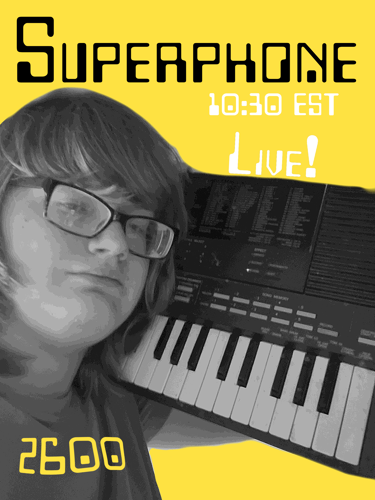
Promotional Poster |
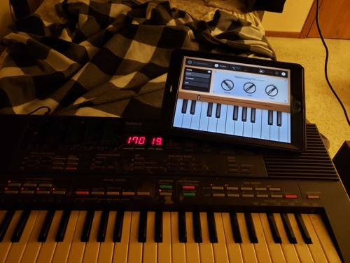
Live rig;
All backing tracks were
programmed on-the-fly using the PSS-480's built in sequencer. That's
my school ipad up top |
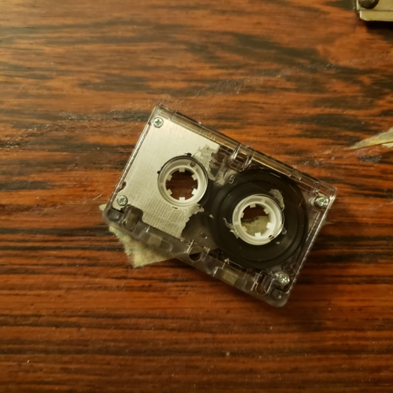
Live Tape;
Live recording was for the
show was done on this microcasette
|
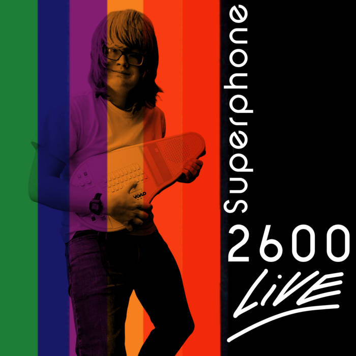
Live Album;
The resulting recordings were
released as 2600 Live
|
December 21st, 2022
Performance Notes; Done online, vaguely Christmas themed
|
Promotional Poster 1 |
Promotional Poster 2 |
January 21st, 2025
Performance Notes; Performed at Kafe Kerouac, first in-person
Superphone show
|
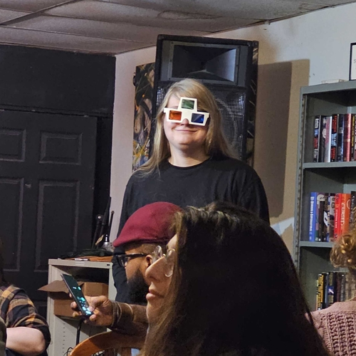
Pre-show shot, among the crowd. The other acts
that night were all folksy guitar noodlers, so my neurotic new wave
was a bit of a kick in the pants. People seemed to like it though. |
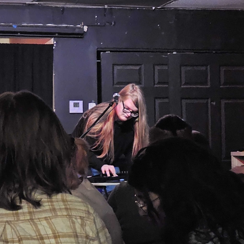
This was the show where I learned that the 4D
glasses don't stay on my head well while I'm playing herky-jerky new
wave, they fell off after the first song and I gave up trying to put
them back on |
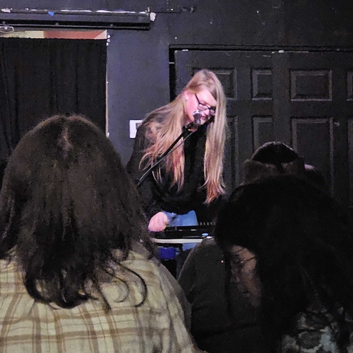
I'm playing Cube Control in this photo, I
brought my fake Moog and a Casio to the show. This was also the first
time I used Fanfare for the Common Man as an opener, which is now my
goto introductory piece |
September 13th, 2025
Performance Notes; Performed outside of Chicago, IL. Large crowd,
projected backing video, opened for The
Stop Bits
|
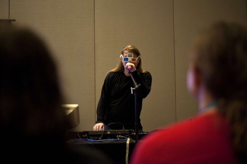
Behind my live rig, after the last show I made
my own pair of "stage glasses" that consisted of 4D glasses taped to my
old prescription
Photo by CommodoreZ |
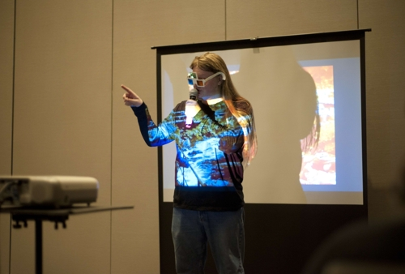
At the end of the set I encore'd with Beautiful
(Are You?) and made a special live mix that allowed me to talk to the
audience
Photo by CommodoreZ |
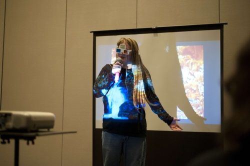
The original idea had been to have the
projection behind me and although that didn't work out, i think it was
worth it for these shots
Photo by CommodoreZ |
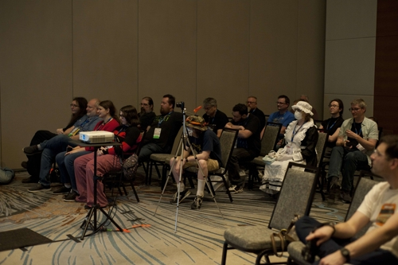
The crowd was big, for me at least. The room
could seat 48, and it was standing room only when I started playing,
great group of folks!
Photo by CommodoreZ |
|
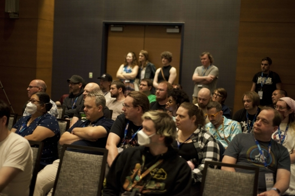
They were mostly well behaved too, save for 2
guys in the back who talked for a lot of the show. I had no idea but I
was told it was annoying
Photo by CommodoreZ |
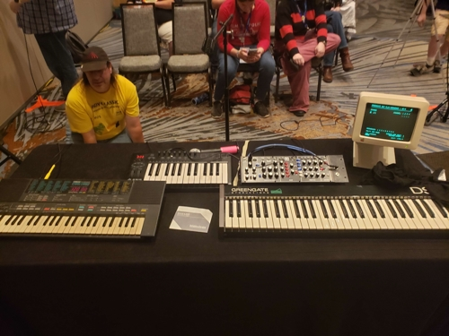
The live rig, featuring the good old Yamaha,
the fake Moog, and the entire Greengate DS:3 sampler. (The apple IIe
was under the drape) |
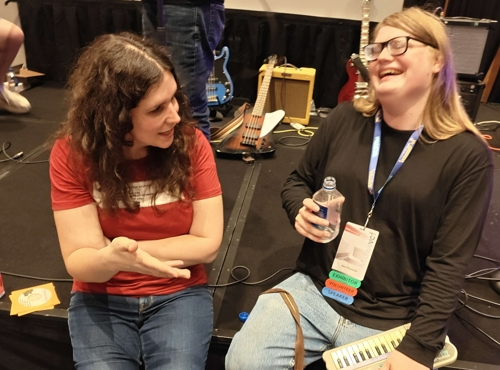
Post show conversation with Veronica from The
Stop Bits. We were equally disappointed that by the nature of our
timeslots we couldn't catch each others shows |
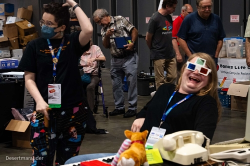
Post-post show shot of my back on the show
floor in my stage gear. I don't remember what I was laughing at,
must've been funny though.
Photo by DesertMarauder |
September 12th, 2026
Performance Notes; Another Chicago show. 45 minute 2 set show, had
the whole stage for performing. Great crowd, fun show.
November 6th, 2026
Performance Notes; In Cleveland at DEVOtional 2026 (Devo fan
gathering). Same set as Chicago.
|
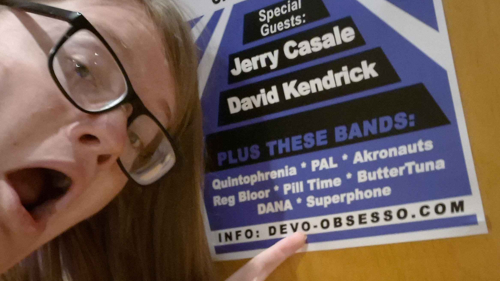
There I am Gary, there I am! This is the first
time the Superphone name has ever shown up on a poster that wasn't my
own. Pretty Cool!
|
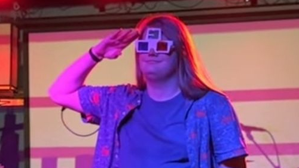
You know the drill! Company halt! Salute for
the anthem! Hail to the chief! God save the queen! Pip pip cheerio!
Long Live the King!
Photo by David Adler |
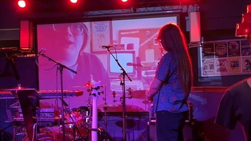
Part of the Superphone Concert experience is
the synchronized video before, during, and between songs. Here I am
checking myself out!
Photo by David Adler |
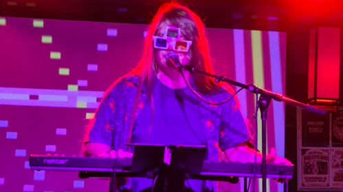
I usually have the aforementioned wireless mic
packs but mine died in transport so I used the stage mics provided by
the venue. It worked!
Photo by Terrence Burke |
|
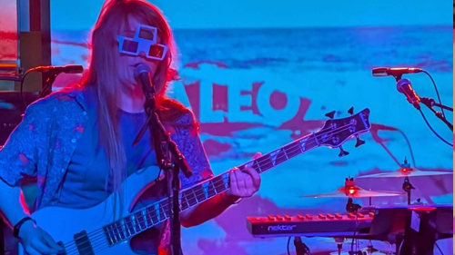
Likewise, my bass crapped out in transport. The
bassist for one of the bands later in the day,
The Akronauts, let me borrow
his. Thanks!
|
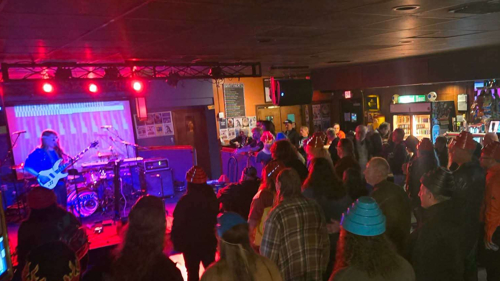
The joy of continued concert performance is
seeing the turnout, This was possibly the biggest and best audience
I've had to date!
Photo by Michael Pilmer |
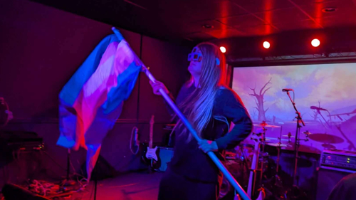
The audience really like this part, I didn't
expect them to hate it but I was surprised the response was so good!
Shoutout to the folks of Cleveland
|
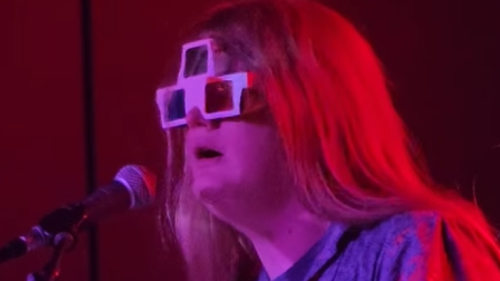
:0
Photo by Christa Mignery |
More to follow...
|